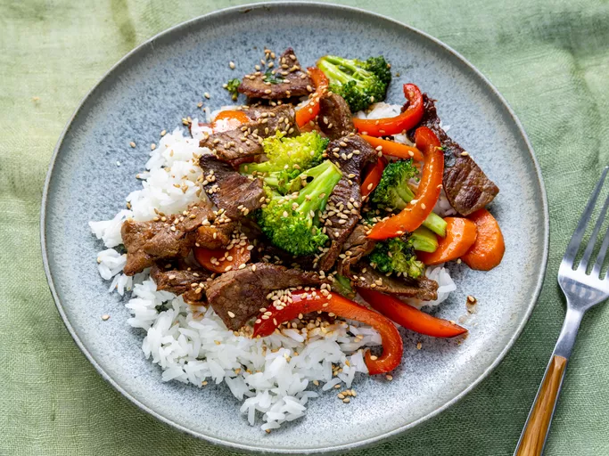

Beef Stir Fry

Description
This dish is packed with veggies, beef, and saucy flavors for a weeknight dinner warrior that checks all the boxes. Served with rice or lo mein noodles, this will be the best beef stir-fry you've ever made.
Ingredients
- 2 tablespoons vegetable oil
- 1 pound beef sirloin, cut into 2-inch strips
- 1 ½ cups fresh broccoli florets
- 1 red bell pepper, cut into matchsticks
- 2 carrots, thinly sliced
- 1 green onion, chopped
- 1 teaspoon minced garlic
- 2 tablespoons soy sauce
- 2 tablespoons sesame seeds, toasted